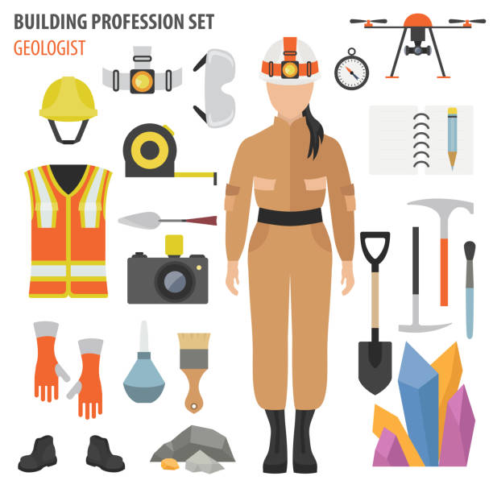
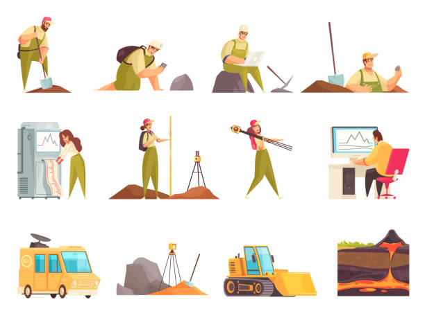

GeologoDay
O Dia do Geólogo é comemorado anualmente em 30 de maio no Brasil. A data é uma homenagem a todos os profissionais relacionados aos estudos da geologia, que podem trabalhar em várias áreas, como a paleontologia, petrologia, pesquisa mineral, geologia de petróleo, hidrogeologia, geotécnica, geoquímica, geofísica, geologia marinha e geologia ambiental. O indivíduo interessado em seguir carreira nesta profissão, deverá concluir um curso de ensino superior em Geologia, através de uma instituição de ensino reconhecida pelo Ministério da Educação e Cultura (MEC), no Brasil. O Dia do Geólogo é celebrado em 30 de maio em homenagem a aprovação do Projeto de Lei nº 2028/60, em 30 de maio de 1962, sendo criada a Lei nº 4.076, que regulamenta a profissão de geólogo. A lei estipula que a profissão deve ser fiscalizada pelo Conselho Regional de Engenharia, Arquitetura e Agronomia (CREA).
Mensagem do dia:
"Aos que desvendam segredos da natureza, ampliam fronteiras, buscam e viabilizam o aproveitamento dos recursos naturais em prol da humanidade, com responsabilidade e respeito ao meio ambiente, tornando possível a existência nesse ponto ímpar do universo. Feliz dia do geólogo! Na superfície, no solo e subsolo. O futuro de nosso planeta em boas mãos! Parabéns pelo seu dia, geólogo! Hoje é um dia especial para a Terra, graças às pessoas que dedicam as suas vidas desvendando os mistérios que a natureza proporciona, integrando a história e transmitindo esse conhecimento para todos. Parabéns a todos os geólogos!"
Quem Somos:
O geólogo é o profissional que analisa e estuda a composição terrestre. Em outras palavras, o especialista da área realiza exames relacionados, majoritariamente, à camada litosférica da terra, compreendendo os diferentes tipos de solo, rochas, minerais e características intrínsecas à superfície. Por meio da análise do profissional, outros setores podem ser favorecidos, como da mineração, petróleo, hidrografia e, até mesmo, da engenharia. O termo "geologia" resulta na junção das palavras gregas: geo (terra) e logia (razão), se referindo ao campo de estudos do profissional. Vale ressaltar que, além das características já mencionadas, o geólogo também é responsável por ler a história da terra cravada nas rochas da crosta terrestre, datando superfícies, catalogando o solo e verificando as diferentes características de cada formação da litosfera.
